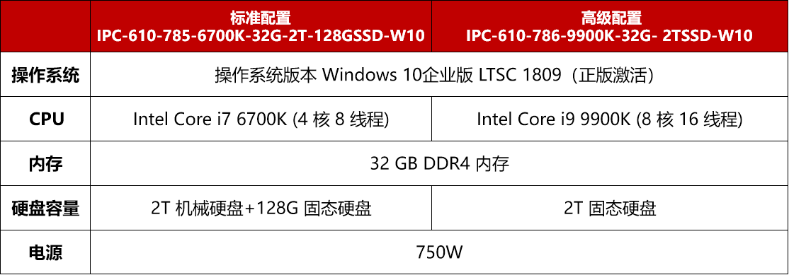
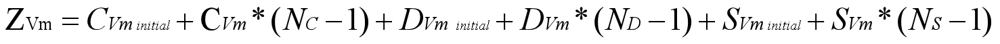
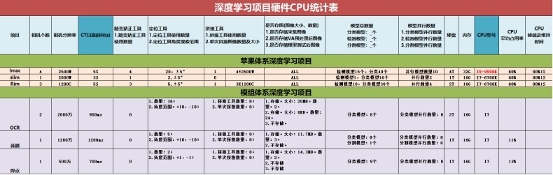
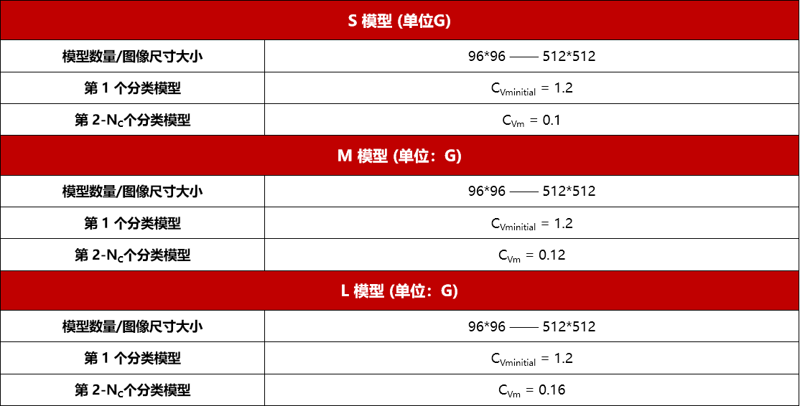
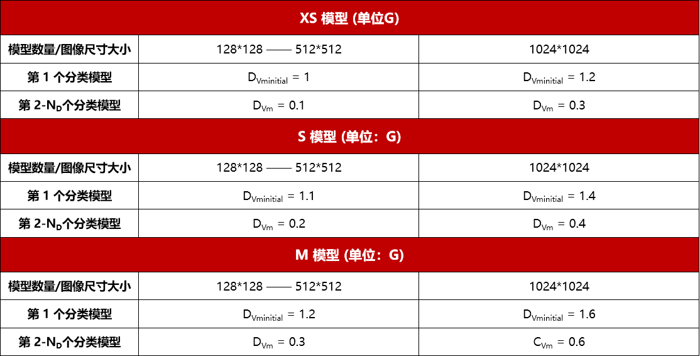
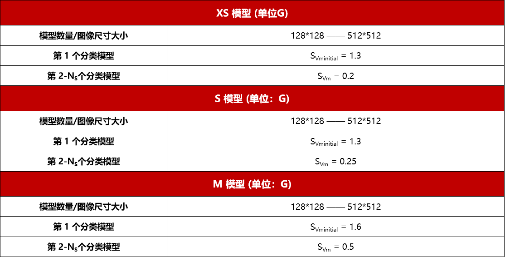

工控机型号

显卡GPU型号
网卡POE型号
GPU显存计算方法步骤
首先根据项目检测项需求，评估项目方案，明确以下几点
确定使用哪种分类模型（S/M/L）
确定分类模型使用个数Nc
确定输入图像尺寸大小
确定使用哪种检测模型（XS/S/M）
确定检测模型使用个数ND
确定输入图像尺寸大小
确定使用哪种分割模型（S/M）
确定分割模型使用个数NS
确定输入图像尺寸大小
其次根据附录来线性查找并大致估计出 GPU 显存计算公式 中需要的参数值
最后计算出公式的结果，并根据 GPU 选型策略 确定 GPU 型号
GPU 显存计算公式

其中：
ZVm 代表部署阶段 GPU 显存占用量
CVminitial 代表第 1 个分类模型 GPU 显存占用量
CVm 代表第 2 ~ NC 个分类模型 GPU 平均显存占用量
NC 代表需要分类模型总数量
DVminitial 代表第 1 个检测模型 GPU 显存占用量
DVm 代表第 2 ~ ND 个检测模型 GPU 平均显存占用量
ND 代表需要检测模型数量
SVminitial 代表第 1 个分割模型 GPU 显存占用量
SVm 代表第 2 ~ NS 个分割模型 GPU 平均显存占用量
NS 代表需要分割模型数量
GPU 选型策略
如果 ZVm ≥ 9G，建议选择 NVIDIA GTX3090(24G) 显卡
如果 ZVm < 9G，建议选择 NVIDIA GTX3060(12G) 显卡
注意
如果初期评估后已经达到 9G 左右的显存时，一定跟客户说清楚：一旦新增检测项或其他需求后，会升级 GPU 显卡。
由于影响 CPU 因素过多，情况非常复杂，主要影响因素有 CT 扫描时间、相机分辨率及相机个数、畸变矫正工具、定位工具、拼接工具、存图、模型数量等， 详下表。
目前的深度学习项目只有 Imac 项目用到了 i9-9900K 处理器， 其他苹果、模组项目的相关影响因素的统计项见下表，作为选择 CPU 型号的综合参考。

如果光学方案中需要的相机数量小于等于 4，则选择一块 POE 网卡；
如果光学方案中需要的相机数量大于 4，则选择两块 POE 网卡。
注意
深度学习项目最多不会超过 1 托 8。
深度学习OCR工具算法对于硬件和系统有具体要求为：工控机CPU要求在5代以上，系统要求是Win10。
分类模型

检测模型

分割模型
